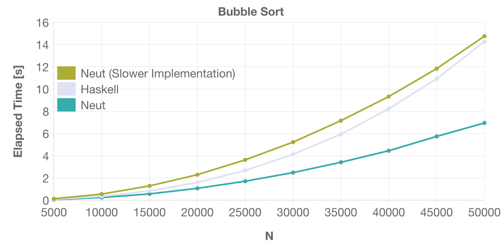

Static Memory Management
Here, we'll see how to write performant programs in Neut.
What You'll Learn Here
- How memory regions are handled in Neut
- How to bypass copying resources
- How Neut optimizes memory allocations/deallocations
Linearity and Memory
In Neut, the content of a variable is copied according to its type if the variable is used more than once. Consider the following code:
// before compilation (pseudo code)
define foo(xs: list(int)): list(int) {
let ys = xs in // use `xs` (1)
let zs = xs in // use `xs` (2)
some-func(ys);
other-func(zs);
xs // use `xs` (3)
}
In the above code, the variable xs is used three times. Because of that, the content of xs is copied twice:
// after compilation (pseudo-code)
define foo(xs: list(int)): list(int) {
let xs1 = COPY-VALUE(list(int), xs) in
let xs2 = COPY-VALUE(list(int), xs) in
let ys = xs1 in
let zs = xs2 in
some-func(ys);
other-func(zs);
xs
}
Also, the content of a variable is discarded if the variable isn't used. Consider the following code:
// before compilation
define bar(xs: list(int)): unit {
Unit
}
In the above code, since xs isn't used, the content of xs is discarded as follows:
// after compilation (pseudo-code)
define bar(xs: list(int)): unit {
let _ = DISCARD-VALUE(list(int), xs) in
Unit
}
Technically speaking, these discarding/copying operations also happen when the variable is an immediate value like an integer:
define buz(x: int): unit {
Unit
}
↓
// pseudo-code
define bar(x: int): unit {
let _ = DISCARD-VALUE(int, x) in
Unit
}
In practice, however, discarding/copying operations on immediate values are optimized away.
In the literature, a use of a variable is called linear if the variable is used exactly once. Neut's compiler translates programs so that every non-linear use of variables becomes linear, ignoring arguments in discarding/copying functions.
If you're interested in how Neut achieves these discarding/copying operations, please see How to Execute Types.
To Be Conscious of Cloning Values
Suppose the content of a variable were to be copied simply by using it more than once. In that case, we might suffer from unintended cloning and encounter unexpected performance degradation.
The compiler thus requires us to prefix the name of a variable with ! when the variable needs to be copied. Let's consider the following code:
define make-pair(xs: list(int)): pair(list(int), list(int)) {
Pair(xs, xs)
}
When checking this code, the compiler will report an error because the code uses the variable xs twice and the variable isn't prefixed with !.
You can satisfy the compiler by renaming xs into !xs:
define make-pair(!xs: list(int)): pair(list(int), list(int)) {
Pair(!xs, !xs)
}
Free Variables in a Local Recursion
This ! is also required when using a free variable in a term-level define:
define multi-print(!message: text): unit {
let f =
define self(counter: int): unit {
if ge-int(counter, 10) {
Unit
} else {
// `!message` is a free variable of `self`
printf("message: {}\n", [!message]);
self(add-int(counter, 1))
}
}
in
f(0)
}
This is because free variables in a term-level define are cloned during recursion. Seeing how the above code is compiled might be illuminating:
// `self` is now closed thanks to the new parameter `!m` (lambda lifting)
define self(counter: int, !m: text): unit {
if ge-int(counter, 10) {
Unit
} else {
// üí´ note that `!m` is used twice
printf("message: {}\n", [!m]);
self(add-int(counter, 1), !m)
}
}
define multi-print(!message: text): unit {
let f =
function (counter: int) {
self(counter, !message)
}
in
f(0)
}
Cloning Values For Free
The prefix ! is unnecessary if the variable can be copied for free. For example, the following code will typecheck:
define make-pair(x: int): pair(int, int) {
Pair(x, x)
}
because we can "copy" integers for free (by simply using the same x twice).
The Problem: Excessive Copying
Now, suppose we defined a function length as follows:
define length(xs: list(int)): int {
match xs {
| Nil =>
0
| Cons(_, ys) =>
add-int(1, length(ys))
}
}
Also, suppose that we used this length as follows:
define use-length(!xs: list(int)): unit {
let len = length(!xs) in // use `length` to calculate the length of `!xs`
some-function(len, !xs) // then use `len` and `!xs`
}
Note that the variable !xs is used twice. Therefore, in this example, the content of !xs is copied just to calculate its length. This is a disaster. The end of the world. Every wish is crushed into pieces.
Luckily, there is a loophole for this situation.
The Solution: Noema Type
We need a way to bypass excessive copying. Here come noema types.
For any type t, Neut has a type &t. We'll call this the noema type of t. Let's introduce some terminologies:
- We'll call a term
ea noema if the type ofeis a noema type. - We'll say that a term is noetic if the type of the term is a noema type.
Unlike ordinary terms, a noema isn't discarded or copied even when used non-linearly. By using this behavior, we can avoid the disaster we have just seen.
Let's see how it works. We first redefine length. If the type t is an ADT type, you can inspect its content using case:
define length(xs: &list(int)): int {
case xs {
| Nil =>
0
| Cons(_, ys) =>
add-int(1, length(ys))
}
}
The main difference between case and match is that case doesn't perform free against its arguments. Because of that, this new length doesn't consume xs.
Also, note that the newly-bound variables in case are automatically wrapped with &(_). For example, in the above example, the type of ys is not list(int), but &list(int).
The use-length then becomes as follows:
define use-length(xs: list(int)): unit {
let len = length( ??? ) in
some-function(len, xs)
}
We need a way to create a noetic version of xs: list(int).
Creating a Noema
We can create a noema using let-on.
define use-length(xs: list(int)): unit {
// üåü
let len on xs =
// xs: &list(int)
length(xs)
in
// xs: list(int)
some-function(len, xs)
}
on takes a comma-separated list of variables. Variables specified there are then cast to a noema in the body of the let and cast back to non-noetic values in its continuation.
The syntax let-on is conceptually the following syntax sugar:
let result on x = e in
cont
// ↓ desugar
let x = unsafe-cast(a, &a, x) in // cast: `a` ~> `&a`
let result = e in // (use `&a`)
let x = unsafe-cast(&a, a, x) in // uncast: `&a` ~> `a`
cont
We'll call the content of noetic value xs a hyle. In the example, the hyle of xs at length(xs) is [1, 2, 3].
The result of let-on (that is, len in this case) can't include any noetic term. This restriction is required so that a noetic value won't outlive its hyle. If interested, please see the corresponding part of the language reference for more information.
Embodying a Noema
Incidentally, you can also create a value of type a from a value of type &a, as follows:
define make-pair-from-noema<a>(x: &a): pair(a, a) {
Pair(*x, *x)
}
By writing *e, you can clone the hyle of the noema e along the type a, keeping the hyle intact.
Allocation Canceling
Let's see another aspect of Neut's memory management. The compiler can sometimes optimize away memory allocation thanks to its static nature. Consider the following code:
data int-list {
| Nil
| Cons(int, int-list)
}
// [1, 5, 9] => [2, 6, 10]
define increment(xs: int-list): int-list {
match xs {
| Nil =>
Nil
| Cons(x, rest) => // ← "the `Cons` clause"
let foo = add-int(x, 1) in
let bar = increment(rest) in
Cons(foo, bar)
}
}
The expected behavior of the Cons clause would be something like the following:
- obtain
xandrestfromxs freethe outer tuple ofxs- calculate
foo (= add-int(x, 1))andbar (= increment(rest)) - allocate memory region using
mallocto representCons(foo, bar) - store the calculated values to the pointer and return it
However, the compiler knows the following two facts during compilation:
- The size of outer tuples of
Cons(x, rest)andCons(foo, bar)are the same - The outer tuple of
Cons(x, rest)will never be used after extracting its contents
Thanks to this knowledge, the compiler can optimize away a pair of free and malloc, as follows:
- obtain
xandrestfromxs - calculate
foo (= add-int(x, 1))andbar (= increment(rest)) - store the calculated values to
xs(overwrite)
When a free is required, the compiler looks for a malloc in the continuation that is the same size and optimizes away such a pair if one exists. The resulting assembly code thus performs in-place updates.
How Effective Is This Optimization?
Below is the result of benchmarking of a bubble sorting program. This test creates a random list of length N and performs bubble sort on the list.

This benchmark executes the following sort function:
data int-list {
| My-Nil
| My-Cons(int, int-list)
}
nominal {
_insert(v: int, xs: int-list): int-list,
}
// üåü
inline _swap-gt(cond: bool, v: int, x: int, xs: int-list): int-list {
if cond {
My-Cons(x, _insert(v, xs))
} else {
My-Cons(v, My-Cons(x, xs))
}
}
define _insert(v: int, xs: int-list): int-list {
match xs {
| My-Nil =>
My-Cons(v, My-Nil)
| My-Cons(y, ys) =>
_swap-gt(gt-int(v, y), v, y, ys)
}
}
define sort(xs: int-list, acc: int-list): int-list {
match xs {
| My-Nil =>
acc
| My-Cons(y, ys) =>
sort(ys, _insert(y, acc))
}
}
The above is the "faster" implementation of bubble sorting in Neut. The key person is _swap-gt. The above code defines _swap-gt as an inline function. Therefore, in _insert, the definition of _swap-gt is expanded, which makes allocation canceling of My-Cons in _insert possible.
The "slower" implementation can be obtained by replacing inline at the üåü with define. In this implementation, since the definition of _swap-gt can't be expanded in _insert, allocation canceling of My-Cons in _insert is not possible.
I also added the result of Haskell just for reference.
Additional notes:
- You can find the source files used in this benchmark here.
- I used my M1 Max MacBook Pro (32GB) to run this benchmark.
If you're interested in more benchmarking results, please see Benchmarks.
What You've Learned Here
- Neut uses noema types to bypass copying resources
- The compiler finds pairs of
malloc/freethat are the same size and optimizes them away